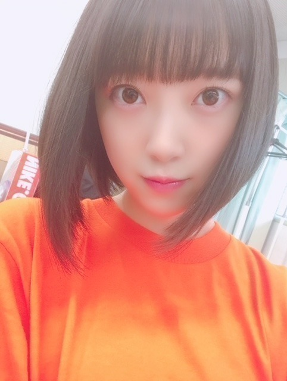

2018/0811Satデニムに守られる
こんばんは！
親知らずもだいぶ治りつつあり
やっとご飯が噛めて安心しています...
まだ本調子ではないので明日の握手会でも
あまり話せない&声が小さいかもですが
体調は元気なので！！
お待ちしています。

疲れてすぐベッドにダイブしてしまう今日この頃。
そこから起き上がるのになかなか時間が
かかるのよね...

サイリウムカラーはオレンジx白です♪

またオレンジ着てる。笑
衣装でも多いです！ありがたや！
白もよく着るからなー。


BOMB発売中！美月と表紙。よろしく！
最近は、
万引き家族
カメラを止めるな
コードブルー
未来のミライ
を観ました。皆さんは何か観ましたか〜？
カメラを止めるな
ゲラゲラ笑っちゃった。笑
ではまた〜
2018/08/11 18:00
コメント(475)
みおちゃん！なんて可愛いんだ！透明感ありすぎ
みおなかわいい❤︎
あたしもコードブルーみました！感動（ ; ; ）
あたしもコードブルーみました！感動（ ; ; ）
ジコチューのMVでも美月と一緒だったね！
1+1=5ぐらいの相乗効果あるね！
シンクロの横浜個握で、極度の対人恐怖症の息子くんが、未央奈の握手に2回参加して、喋れなかったけど2回目に未央奈に、さっきも来たよね？って声掛けてくれたって、すごい笑顔で帰ってきました。
未央奈の小さな一言が息子くんの大きな一歩になりそうです。
名古屋の初日とジコチューの横浜個握にも参加します！
ほんとにありがとう。
1+1=5ぐらいの相乗効果あるね！
シンクロの横浜個握で、極度の対人恐怖症の息子くんが、未央奈の握手に2回参加して、喋れなかったけど2回目に未央奈に、さっきも来たよね？って声掛けてくれたって、すごい笑顔で帰ってきました。
未央奈の小さな一言が息子くんの大きな一歩になりそうです。
名古屋の初日とジコチューの横浜個握にも参加します！
ほんとにありがとう。
カメラを止めるな観たいわ
写真が全部可愛い
ブログありがとう。
今日の握手会頑張ってください
ブログありがとう。
今日の握手会頑張ってください
一緒にジュラシックワールド見に行こー
毎日お疲れ様です
僕は誕生日の7月31日にポケモンを見ました。
親知らず、お大事にしてください。
僕は誕生日の7月31日にポケモンを見ました。
親知らず、お大事にしてください。
ほりちゃん、こんにちは。
未来のミライ、観ましたよ！
世間の評価はイマイチですが、私はすごく面白かったです。
また観たいと思いました。
カメラを止めるなは、まだ私のよく行くシネコンでは封切られていないので、封切られたら観にいこうと思ってます！
じゃーね！
未来のミライ、観ましたよ！
世間の評価はイマイチですが、私はすごく面白かったです。
また観たいと思いました。
カメラを止めるなは、まだ私のよく行くシネコンでは封切られていないので、封切られたら観にいこうと思ってます！
じゃーね！
チャァオ～～!☆彡
ミオッキ～～～～❕❤❤❤❤❤笑顔
腫れ、治まって良かったねぇ～～⤴⤴❤❤❤❤❤❤❤笑顔
だいぶ、頑張ったねぇ～～⤴⤴⤴❕❤❤❤❤❤❤❤笑顔
またこれから、御飯を美味しく楽しく食べられるねぇ～～⤴⤴⤴❕❤❤❤❤❤❤❤笑顔
良かった、良かったぁ～～⤴⤴⤴❕❤❤❤❤❤❤❤❤笑顔
～☆～☆☆～☆～☆☆～
美月ちゃんと写るぅ～～～⤴⤴⤴
ミオッキ～～の～～⤴⤴
このぷくっぽい、笑顔が素敵だよぉ～～～⤴⤴❕❤❤❤❤❤❤❤笑顔
この笑顔、めちゃめちゃ大好きぃ～～⤴⤴❕❤❤❤❤❤❤❤笑顔
ミオッキ～～～～⤴⤴⤴
可愛いぃ～～笑顔素敵ぃ～～⤴⤴❕❤❤❤❤❤❤❤❤❤❤❤❤❤笑顔
それじゃ～ミオッキ～～握手会、楽しんできてねぇ～～⤴⤴⤴❕❤❤❤❤❤❤❤笑顔
またねぇ～～⤴⤴⤴❕❤❤❤❤❤❤❤笑顔
バイバ～イ❕❤❤❤❤❤❤❤笑顔
ヾ(@゜▽゜@)ノ
☆大人しい、おすまし！より☆彡
タイトルの「デニムに守られる」って何でした？
毎日お疲れ様です
僕はポケモンを見ました！
感動する話なのでオススメです！
親知らず、お大事にしてください。
僕はポケモンを見ました！
感動する話なのでオススメです！
親知らず、お大事にしてください。
やっちゃったなー
可愛いの次元超えちったよ
堀ちゃん見るだけで疲れが吹っ飛ぶ
可愛いの次元超えちったよ
堀ちゃん見るだけで疲れが吹っ飛ぶ
こんにちは
親知らずが治りつつあって安心しました。
今回の写真達もだいぶパンチがありますね！
動画の方もとっても可愛いらしかったです♡
ベッドでゆっくりと疲れをとって下さいね♪
美月ちゃんとの写真もとっても華やかです！
BOMBも夏らしくてとっても爽やかですね☆
オフショルも涼しげだし、
オレンジと白がとっても似合ってます☺
親知らずが治りつつあって安心しました。
今回の写真達もだいぶパンチがありますね！
動画の方もとっても可愛いらしかったです♡
ベッドでゆっくりと疲れをとって下さいね♪
美月ちゃんとの写真もとっても華やかです！
BOMBも夏らしくてとっても爽やかですね☆
オフショルも涼しげだし、
オレンジと白がとっても似合ってます☺
未央奈ー❗️
ブログありがとう❗️
親知らず治ってきてよかった✨
お肉早く食べれるといいね❗️
21stの幕張の個握行くからねー
ゆうたんより
ブログありがとう❗️
親知らず治ってきてよかった✨
お肉早く食べれるといいね❗️
21stの幕張の個握行くからねー
ゆうたんより
オレンジが似合ってて可愛いね！
親不知の抜歯から回復したみたいで良かったですね！
映画、話題作たくさん観てますね！
自分はまだどれも観てないです。
カメラを止めるなは、最近あちこちで取り上げられていますね！
気になりますが、近くで上映してないんですよねぇ。
円盤化されたら観ようかなぁ☆
映画、話題作たくさん観てますね！
自分はまだどれも観てないです。
カメラを止めるなは、最近あちこちで取り上げられていますね！
気になりますが、近くで上映してないんですよねぇ。
円盤化されたら観ようかなぁ☆
未央奈ブログ更新ありがとう！
ご飯が噛めるようになって良かった良かった。
オレンジのオフショルも似合ってて可愛い！
BOMB買わなきゃですね。
今日の握手会頑張ってね！
ご飯が噛めるようになって良かった良かった。
オレンジのオフショルも似合ってて可愛い！
BOMB買わなきゃですね。
今日の握手会頑張ってね！
オレンジ色とても似合っていますね。またまたエネルギー貰ってしまいました。可愛さとともに未央奈の前向きな姿勢が僕らの力になります、ありがとう。
堀ちゃん大好き！！！
特に顔。
特に顔。
今日は京都で握手会だね。
握手会では未央奈がどんな私服&髪型をするのか毎回楽しみにしてるんだよ。
京都の握手券は取れなかったから行けないので、ブログや755に未央奈の写真を載せてくれると嬉しいな。
未央奈と会えなくて寂しいんだけど・・・嬉しいこともあって・・・なんとback numberさんのライブに行けることになったんだ
なので今日はライブ楽しんでくるね
bombはもちろんゲットしたよ。
いゃ～未央奈はオフショルが似合うね～それと水色の衣装も似合うね～
でも個人的に１番お気に入りは未央奈のサイリウムカラーであるオレンジと白の衣装かな。
この写真をみた瞬間、未央奈カラーだ って思ってテンションが上がったよ。
って思ってテンションが上がったよ。
俺も仕事が忙しくて、家には「寝に帰る」って感じになってるよ
でも仕事にやりがいを感じてるし、これを乗り越えられれば成長できると思うから、前向きに考えながら頑張ってるよ。
目指す方向はお互いに違うだろうけど、お互いに頑張ろうね。
ゴロ～
握手会では未央奈がどんな私服&髪型をするのか毎回楽しみにしてるんだよ。
京都の握手券は取れなかったから行けないので、ブログや755に未央奈の写真を載せてくれると嬉しいな。
未央奈と会えなくて寂しいんだけど・・・嬉しいこともあって・・・なんとback numberさんのライブに行けることになったんだ
なので今日はライブ楽しんでくるね
bombはもちろんゲットしたよ。
いゃ～未央奈はオフショルが似合うね～それと水色の衣装も似合うね～
でも個人的に１番お気に入りは未央奈のサイリウムカラーであるオレンジと白の衣装かな。
この写真をみた瞬間、未央奈カラーだ
俺も仕事が忙しくて、家には「寝に帰る」って感じになってるよ
でも仕事にやりがいを感じてるし、これを乗り越えられれば成長できると思うから、前向きに考えながら頑張ってるよ。
目指す方向はお互いに違うだろうけど、お互いに頑張ろうね。
ゴロ～
こんにちはあきちゃんです。みおなちゃん僕も山下智久出演映画コードブルー4回も観ました。僕わ戸田恵梨香ちゃんのシーンで泣きました。そして新曲ジコチューで行こう！みおなちゃんが載っているCタイプを4回も買いました。みおなちゃんの生写真入ってました。そしてBOMB4冊も買いました。そしてオレンジ色の服可愛いよね。僕もオレンジ色の服持ってます。みおなちゃんまだ早いけど、クリスマスにディズニーランドに行かない。一緒にデートしたいな。あと9月9日の全国握手会の幕張メッセに行きますね。僕わ乃木坂46の中で１番みおなちゃんが大好きだよーん。生写真も写真集もいっぱい持っています。また写真集だせるように応援します。コメントはいるまで何回も書きます。❤❤❤❤❤❤❤❤❤❤❤❤❤❤❤❤❤❤❤❤❤❤❤❤❤❤❤❤❤❤❤❤❤❤❤❤❤❤❤❤❤❤❤❤❤❤❤❤❤❤❤❤
こんにちは。
握手会のお疲れ様です。京都は、暑くて、大盛況みたいなので、
マイペースで楽しまれるといいと思います。
ＢＯＭＢ買って見ています。
表紙から、素晴らしいです。
これは重要な事だと思います。
未央奈さん、仕上げてますねー。
ほとんどのページで、全て可愛いです。
きれいです。
この調子を維持されるのが、理想だと思います。
未央奈さんは、いつも頑張っていますので、言い難いですが、
是非、継続してください。
映画は、まず、映画館で、観る事がまずないです。
自分は、ケーブルＴＶの映画専門チャンネルを、良く見ます。
お勧めチャンネルは、シネフィルＷＯＷＯＷです。
全て、既上映作品ですが、隠れた名画を、観せてくれるのが、
良いです。
自宅で好きなときに、悠々と、観れるのが、ＴＶ映画の良い所だ
と思います。
最近のお勧めは、特に無いですが、ＡＸＮ Ｍｙｓｔｅｒｙチャン
ネルの、刑事物は、落ち着いていて、いつ見ても良いです。
母親と良く観ています、
話少し前ですが、
レコメンでＢＢＱやって欲しいですね。
その時に、
浴衣姿の未央奈さんが、見れたら最高です。
こんにちは、未央奈さん
個握京都で頑張ってることと思います
ブログ更新もお疲れ様でした
ところで、、
「センセイ君主」は観てないの？意外だ
気になってるので未央奈評が聞きたかった
関連して19日に初の地上波放送を控えてる
キミスイが楽しみです
まだ観てない人の評価がどうなるのかと。。
観る度に感動が増してこれほど感銘を受けた
邦画は今までにない
たった2時間あまりで人生を揺り動かす事の
出来る映画という文化の持つ力は凄い
だから未央奈さんも映画好きなんだね
なんて思いました
みおなちゃんかわいすぎる
未央奈〜arとBOMB見たよ〜 未央奈は美人さんで尚且つ可愛いよね〜本当に
未央奈は美人さんで尚且つ可愛いよね〜本当に
 未央奈の握手会行きたかったけど…悉く抽選落選し気づけば全部終了になってました〜
未央奈の握手会行きたかったけど…悉く抽選落選し気づけば全部終了になってました〜
 未央奈の笑顔が綺麗な目が間近で見たかった〜親知らず治ってきて良かったね〜本当に早く完治するように祈ってるよ〜未央奈大好きだ〜
未央奈の笑顔が綺麗な目が間近で見たかった〜親知らず治ってきて良かったね〜本当に早く完治するように祈ってるよ〜未央奈大好きだ〜
こんにちは‼︎
ブログ更新、ありがとうございます♪
ごはんもなんとか食べれるようになったみたいで、安心しました…‼︎
1日でも早く完治することをお祈りしてます♪
美月ちゃんとのボブボブコンビ、とってもいいですね‼︎
トロピカルドリンクを手に、夏っぽさ満開♪
お二人の笑顔がとっても眩しいです…‼︎
あ、そうそう、『ジコチューで行こう!』の特典映像も観ましたよ♪
チェンマイでの飛鳥ちゃんとの撮影の様子が、また違う角度で見ることができて面白かったです…‼︎
観光招致が目的の映像だから、最終的に出来上がったものはただひたすら楽しそうな感じだったけど、撮影自体は仕事だし、大変な部分もありますよね。
お疲れ様でした♪
ちなみに、最近自分が観た映画は、『万引き家族』。
家族とは何なのか、人と人の繋がりとして重要なことは何なのか、正義と悪とは何なのか。
いろいろ考えさせられる映画でした。
あと、ジュラシックワールドの最新作も観に行こうと思ってます‼︎
これは完全に娯楽目的ですね♪
さて、今日は握手会だったのかな？
お疲れ様でした♪
場所や日にちによって暑さ寒さがバラバラで、体調を崩しやすい環境が続いているけど、体調に気をつけて頑張ってください‼︎
ではでは、また。
明日も未央奈にとっていい1日になりますように♪
ブログ更新、ありがとうございます♪
ごはんもなんとか食べれるようになったみたいで、安心しました…‼︎
1日でも早く完治することをお祈りしてます♪
美月ちゃんとのボブボブコンビ、とってもいいですね‼︎
トロピカルドリンクを手に、夏っぽさ満開♪
お二人の笑顔がとっても眩しいです…‼︎
あ、そうそう、『ジコチューで行こう!』の特典映像も観ましたよ♪
チェンマイでの飛鳥ちゃんとの撮影の様子が、また違う角度で見ることができて面白かったです…‼︎
観光招致が目的の映像だから、最終的に出来上がったものはただひたすら楽しそうな感じだったけど、撮影自体は仕事だし、大変な部分もありますよね。
お疲れ様でした♪
ちなみに、最近自分が観た映画は、『万引き家族』。
家族とは何なのか、人と人の繋がりとして重要なことは何なのか、正義と悪とは何なのか。
いろいろ考えさせられる映画でした。
あと、ジュラシックワールドの最新作も観に行こうと思ってます‼︎
これは完全に娯楽目的ですね♪
さて、今日は握手会だったのかな？
お疲れ様でした♪
場所や日にちによって暑さ寒さがバラバラで、体調を崩しやすい環境が続いているけど、体調に気をつけて頑張ってください‼︎
ではでは、また。
明日も未央奈にとっていい1日になりますように♪
こんばんは！
今日は京都の個握、会えて嬉しかったよー！！ありがとう。
次はナゴヤドームだぁー！！楽しみ。
親知らずだいぶ良くなったみたいでなにより。顔の腫れは気にならなかったよ。
最近お疲れみたいやね、、
めっちゃ忙しそうやもんね、
無理しないでね、、
もちろんナゴヤドームのサイリウムカラーはオレンジx白で決まり！良かったら探してみてー(笑)
オレンジの衣装よく似合ってる！(パステルカラー似合う気がする。。)
最近映画館行けてないなぁ、未来のミライは本気で観たいと思ってるけど…
この前飛行機で観たXｰMENスピンオフのLOGANは良かったよ。
今日は京都の個握、会えて嬉しかったよー！！ありがとう。
次はナゴヤドームだぁー！！楽しみ。
親知らずだいぶ良くなったみたいでなにより。顔の腫れは気にならなかったよ。
最近お疲れみたいやね、、
めっちゃ忙しそうやもんね、
無理しないでね、、
もちろんナゴヤドームのサイリウムカラーはオレンジx白で決まり！良かったら探してみてー(笑)
オレンジの衣装よく似合ってる！(パステルカラー似合う気がする。。)
最近映画館行けてないなぁ、未来のミライは本気で観たいと思ってるけど…
この前飛行機で観たXｰMENスピンオフのLOGANは良かったよ。
やぁ(・∀・)ノ未央奈ちゃん♡こんばんは！
りょーへー(R.N.イナダウアーびーむ)だよ♪
今日は、京都で握手会だね！早く未央奈ちゃんに会いたいなぁ！親知らずが良くなってきたみたいで、良かった！私服の紹介とか、まっとるよ！
疲れてベッドにダイブ、その気持ち分かるなぁ！特に、遅く帰ってきた時なんかは、頑張ってお風呂は入るんだけど、そこから先が進まない…！笑 ダイブしたら、起き上がりたくないもん！
オレンジも似合うなぁ！オフショットの未央奈ちゃん、かわいすぎるぅー！BOMB、早くチェックせんとだ！arもだね！
映画、最近観られてないー！時間が出来たら観たい！せっかく夏休みなんだしね！注目してるのは、"検察側の罪人"かな！
気が済むまで寝たい！でも、忙しいのは嫌いじゃないのだ！
#毎日コメント
#握手会お疲れ様
#ベッドでのお写真
#可愛すぎるよ
#最高やん
#お菓子って
#あると食べちゃうよね
#チョコパイ
#好きなんだ～～
#明日も楽しみおな♡
#おやすみおな(o^O^o)
りょーへー(R.N.イナダウアーびーむ)だよ♪
今日は、京都で握手会だね！早く未央奈ちゃんに会いたいなぁ！親知らずが良くなってきたみたいで、良かった！私服の紹介とか、まっとるよ！
疲れてベッドにダイブ、その気持ち分かるなぁ！特に、遅く帰ってきた時なんかは、頑張ってお風呂は入るんだけど、そこから先が進まない…！笑 ダイブしたら、起き上がりたくないもん！
オレンジも似合うなぁ！オフショットの未央奈ちゃん、かわいすぎるぅー！BOMB、早くチェックせんとだ！arもだね！
映画、最近観られてないー！時間が出来たら観たい！せっかく夏休みなんだしね！注目してるのは、"検察側の罪人"かな！
気が済むまで寝たい！でも、忙しいのは嫌いじゃないのだ！
#毎日コメント
#握手会お疲れ様
#ベッドでのお写真
#可愛すぎるよ
#最高やん
#お菓子って
#あると食べちゃうよね
#チョコパイ
#好きなんだ～～
#明日も楽しみおな♡
#おやすみおな(o^O^o)
堀ちゃんお疲れさま〜＼(^o^)／堀ちゃん堀ちゃん〜わー
堀ちゃんがこれから観たいのは、なーにー？
それをいっしょに観たい象〜＼(^o^)／
堀ちゃんがこれから観たいのは、なーにー？
それをいっしょに観たい象〜＼(^o^)／
コード・ブルー見ました！めっちゃ良すぎて何回でも見たいです！映画館で初めてあんなに泣きました！
青夏も見に行ったけどよかったです！
青夏も見に行ったけどよかったです！
ブログ更新ありがとうございます！
映画をたくさん観ていますね！
自分は、七つの大罪、検察側の罪人、アントマンが気になっています！
いつも応援しています！
映画をたくさん観ていますね！
自分は、七つの大罪、検察側の罪人、アントマンが気になっています！
いつも応援しています！
キトキトw!
未央奈ちゃん、ブログ更新ありがとう!!
いつも楽しみに読んでるよ！
永久歯抜くと痛いよねw
自分も数本抜いたときは数日痛かったw
オレンジも白ま、とっても似合うのが素敵!!
ほんと可愛い(ﾉ≧▽≦)ﾉ
まだ時々暑いから、体調には気を付けるのと
無理はしないでね！w
次回も楽しみにしてます!!!
いつも楽しみに読んでるよ！
永久歯抜くと痛いよねw
自分も数本抜いたときは数日痛かったw
オレンジも白ま、とっても似合うのが素敵!!
ほんと可愛い(ﾉ≧▽≦)ﾉ
まだ時々暑いから、体調には気を付けるのと
無理はしないでね！w
次回も楽しみにしてます!!!
少しずつ治ってきて良かったね(*^^*)
早く本気で食べれる様になると良いね(^人^)
早く本気で食べれる様になると良いね(^人^)
僕も未来のミライとコードブルー観ました。
後はインクレディブル・ファミリーを観る予定です。
未央奈さんも良ければ観てみてください
後はインクレディブル・ファミリーを観る予定です。
未央奈さんも良ければ観てみてください
みおなちゃん更新ありがとう╰(*´︶`*)╯♡
親知らず治りつつあるなら良かったです(*´-`)
普通にご飯が食べれないのきついよね(´・ω・)
握手会お疲れ様でした(*ﾟ▽ﾟ*)
疲れちゃうといったんゆっくりしたくてなかなか動きたくなくなるよねー(´・∀・｀)
写真ありがと〜♪(´ε｀ )
オレンジのお洋服も似合いますねー
最近は映画観に行ってないです(´･_･`)
銀魂2は行けたら観に行く予定です･:*+.\(( °ω° ))/.:+
親知らず治りつつあるなら良かったです(*´-`)
普通にご飯が食べれないのきついよね(´・ω・)
握手会お疲れ様でした(*ﾟ▽ﾟ*)
疲れちゃうといったんゆっくりしたくてなかなか動きたくなくなるよねー(´・∀・｀)
写真ありがと〜♪(´ε｀ )
オレンジのお洋服も似合いますねー
最近は映画観に行ってないです(´･_･`)
銀魂2は行けたら観に行く予定です･:*+.\(( °ω° ))/.:+
こんばんは！
カメラを止めるな
観たいな
名古屋ドーム行きます！
おやすみなさい
カメラを止めるな
観たいな
名古屋ドーム行きます！
おやすみなさい
名古屋公演の時は未央奈のカラーを全力で振るね！
未央奈が出てなくても振るよ！！٩( 'ω' )و
未央奈が出てなくても振るよ！！٩( 'ω' )و
BOMD買いま～す
未央奈ブログ更新ありがとう！
オレンジ白ほんとに似合うよね！！！
ナイスサイリウムカラー！
いつも応援してます！！
ナイスサイリウムカラー！
いつも応援してます！！
カメラを止めるないいなぁーみたぃ
未来のミライ見たよ！
すっごいいい、
未来のミライ見たよ！
すっごいいい、
親知らず←早く完治してくれるといいねぇ。
最近、劇場には全然映画観に行けてないなぁ･･･(。>д<) 自宅では、毎日のようにDVDで映画見てるけど。完全に話題作には着いていけてない自分･･･(・。・)苦笑
ゆっくり体休めてあげて、堀ちゃんが明日も1日楽しく過ごせますように(*´-`)ﾉ
最近、劇場には全然映画観に行けてないなぁ･･･(。>д<) 自宅では、毎日のようにDVDで映画見てるけど。完全に話題作には着いていけてない自分･･･(・。・)苦笑
ゆっくり体休めてあげて、堀ちゃんが明日も1日楽しく過ごせますように(*´-`)ﾉ
カメラを止めるな
めちゃデザインされた映画だよね。
本当に面白かった！
最近のオススメ映画は「バーフバリ」！
めちゃデザインされた映画だよね。
本当に面白かった！
最近のオススメ映画は「バーフバリ」！
いろいろ観たい映画もありますが、万引き家族を観てから、映画館では映画観れていません。
オレンジと白いいですね。
頑張って下さい。
オレンジと白いいですね。
頑張って下さい。
堀さん、こんばんは。
ブログ更新してくれてありがとうございます。タイトルは何に攻撃されたかのほうが気になります。
親知らずがまだ尾を引いていたとは思ってませんでした。暑いし忙しいしで大変な日が続いてますね。
「カメラを止めるな！」は超面白いし人に勧めたくなる魔力がありますよね。腹痛くなるくらい笑ったし、あの最後のシーンはW杯で点入ったときくらい興奮しました。僕の感覚だと数年に一回ぐらいで遭遇するんです。老若男女で腹抱えて笑って、たらふく食った後みたいなニンマリ顔で余韻楽しみながら皆が帰ってくっていう映画体験。
パンフレットに台本がまるまる載ってるので、それ読み込んでからまた見に行こうと思ってます。
そういえば７５５で言ってた気になる部分ってゾンビが武器を使うことでしょうか。ゾンビは生前の習慣を繰り返すってのは「アイアムアヒーロー」の設定でしたけど、それを踏まえるなら、武器使うゾンビは普段から斧振り回すような他のホラー映画だったら主役になれてた危ない奴だったということではないでしょうか。その場合ゾンビ後のほうが危険性下がってますけどね。
僕が見たのだと「オーシャンズ８」も「志乃ちゃんは自分の名前が言えない」も良かったですよ。
あと先日ドキュメンタリー映画を劇場で見てて居眠りしてしまって、終わって明かりついて起きたら周りがまだ眠ってたってことがありました。体力回復のために堀さんに勧めようかと思ったんですけど、一応美術に関するものだから眠れないかもしれないのでそれを勧めるのは止めておきます。
遠征も続いて体力的に大変だと思うので、くれぐれも無理はしないで下さいね。
堀さんの笑顔にいつも癒されてます。いつもありがとうございます。
ブログ更新してくれてありがとうございます。タイトルは何に攻撃されたかのほうが気になります。
親知らずがまだ尾を引いていたとは思ってませんでした。暑いし忙しいしで大変な日が続いてますね。
「カメラを止めるな！」は超面白いし人に勧めたくなる魔力がありますよね。腹痛くなるくらい笑ったし、あの最後のシーンはW杯で点入ったときくらい興奮しました。僕の感覚だと数年に一回ぐらいで遭遇するんです。老若男女で腹抱えて笑って、たらふく食った後みたいなニンマリ顔で余韻楽しみながら皆が帰ってくっていう映画体験。
パンフレットに台本がまるまる載ってるので、それ読み込んでからまた見に行こうと思ってます。
そういえば７５５で言ってた気になる部分ってゾンビが武器を使うことでしょうか。ゾンビは生前の習慣を繰り返すってのは「アイアムアヒーロー」の設定でしたけど、それを踏まえるなら、武器使うゾンビは普段から斧振り回すような他のホラー映画だったら主役になれてた危ない奴だったということではないでしょうか。その場合ゾンビ後のほうが危険性下がってますけどね。
僕が見たのだと「オーシャンズ８」も「志乃ちゃんは自分の名前が言えない」も良かったですよ。
あと先日ドキュメンタリー映画を劇場で見てて居眠りしてしまって、終わって明かりついて起きたら周りがまだ眠ってたってことがありました。体力回復のために堀さんに勧めようかと思ったんですけど、一応美術に関するものだから眠れないかもしれないのでそれを勧めるのは止めておきます。
遠征も続いて体力的に大変だと思うので、くれぐれも無理はしないで下さいね。
堀さんの笑顔にいつも癒されてます。いつもありがとうございます。
未央奈ちゃん、おはよう。
昨日は京都での握手会、お疲れ様でした。体調不良のメンバーが多いみたいだから、未央奈ちゃんも無理し過ぎないように気をつけてくださいね。
BOMB買ったよ、ブルーやオレンジのオフショルなど全て素敵でした。プレゼントのチェキを応募しました、当たるといいなぁ～
名古屋ドームまでもう少し、未央奈ちゃんの最高のパフォーマンスが見たいんです。楽しみにしています。
乃木坂46と頑張ってるcuteでsmartな未央奈ちゃんを応援しています。
昨日は京都での握手会、お疲れ様でした。体調不良のメンバーが多いみたいだから、未央奈ちゃんも無理し過ぎないように気をつけてくださいね。
BOMB買ったよ、ブルーやオレンジのオフショルなど全て素敵でした。プレゼントのチェキを応募しました、当たるといいなぁ～
名古屋ドームまでもう少し、未央奈ちゃんの最高のパフォーマンスが見たいんです。楽しみにしています。
乃木坂46と頑張ってるcuteでsmartな未央奈ちゃんを応援しています。
カメラを止めるな！いいよね〜
最近だとウィンド・リバーがオススメ
・スターリンの葬送狂騒曲
・ブリグスビー・ベア
・女と男の観覧車
・ルームロンダリング
・ワンダー
・レディ・バード
この辺りも良かったよ
最近だとウィンド・リバーがオススメ
・スターリンの葬送狂騒曲
・ブリグスビー・ベア
・女と男の観覧車
・ルームロンダリング
・ワンダー
・レディ・バード
この辺りも良かったよ
ほちゃ！！すき！！


ブログ更新ありがとう＼(^o^)／
親知らず早く治って安心して
美味しいご飯いっぱい食べられるといいね
今日の握手会楽しんでね
あまり無理せずにね
BOMEチェックするね
映画全然観てないなぁ～。
「コードブルー」と「僕のヒーローアカデミア」が
気になってる！！
「カメラを止めるな」話題だよね！
面白いのかぁ～！！
久々に映画館で観てみるかなぁ～！！
暑い日が続くけど、体調に気を付けてね